ETL Process
How ETL processes the data to Qlik
To better understand the ETL process, please look at the image below:
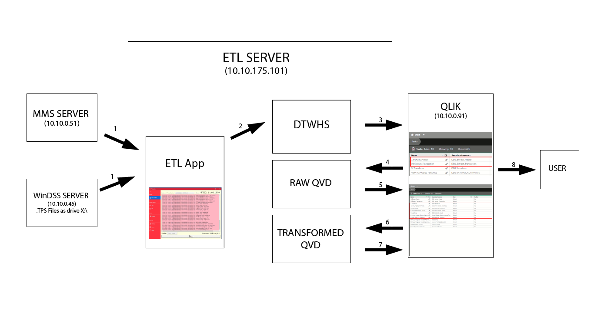
- Data are extracted from the MMS & WinDSS servers and processed according to the fields defined in the
DataDictionaryasJSONfiles. This is scheduled to automatically run at exactly 12:00 AM daily. - The ETL App then loads the generated
JSONfiles into theDTWHS. - Qlik then extracts the data again from the
DTWHS. - Qlik then collates all the data from the
DTWHSthen saves it as raw QVD files here:\\10.10.175.101\Qlik DSG\Raw Datafor later use. - Qlik then gets the data from the raw QVD files, saves it into memory.
- Qlik runs a predefined script to transform the raw data, then saves it again as transformed QVD files, here:
\\10.10.175.101\Qlik DSG\Transformed Data. - Qlik then gets the data from the transformed QVD files, saves it into memory then serves it to the users.
- Users then gets to view the data by visiting the Hub:
http://10.10.0.91/hub.
NOTE
The whole process consumes around 11 hours of time. Starting from 12:00 AM and ending at approximately 2:30 PM. During this period, user will only be able to see yesterday's data when opening the Hub.
Any changes made with Qlik script or reloading/rerun of inconsistent data will be reflected tomorrow around 2:30 PM. You can check reloading status by visiting:
http://10.10.0.91/qmc/tasks
Daily Checking
Daily checking makes sure the data between the DTWHS & MMS are consistent. This is to be done daily and should start first thing in the morning. To check, please follow the steps below:
-
RDP to
10.10.175.101and login asAdministratorto run theETL Verifier Scripton the desktop.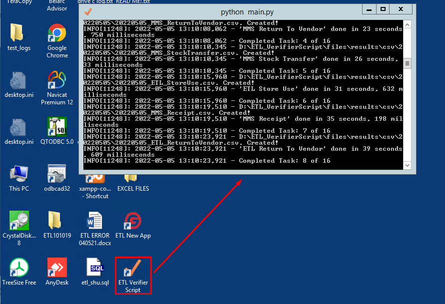
If you are generating data beyond 3 months (based on your query), there will be a prompt that you are extracting data beyond 3 months, just click 'No' in order for your queries' date to be updated. Afterwards, you may run the ETL verifier script again.
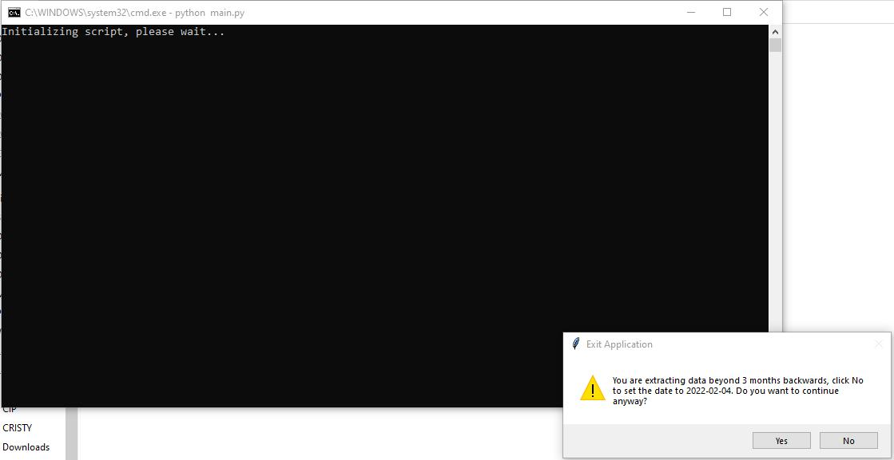
-
The script will create 16
csvfiles (8 from MMS and 8 from ETL DTWHS) files as results, after approximately 4 hours. You can view the results under the folder with the current date inYYYYMMDDformat.For example, if today is December 01, 2021, the
csvfiles will saved in the20211201folder. 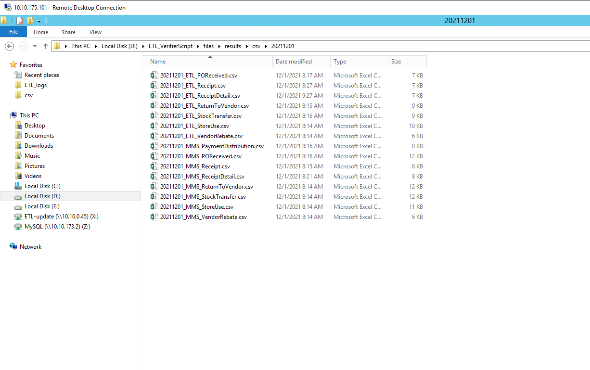 -
Extract all the data and compare the amount of each date like in the image below, make sure the dates are aligned:
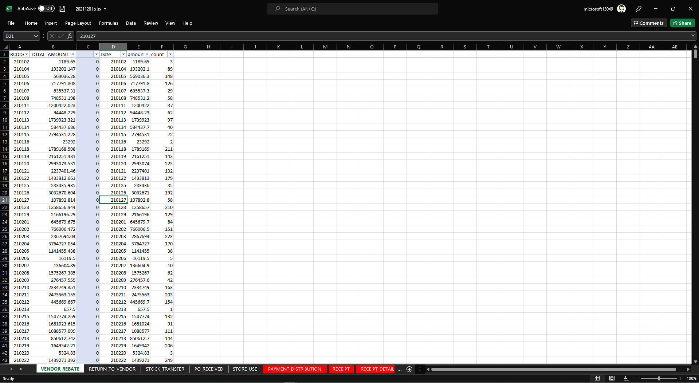
-
Add any inconsistent date to the rerun queue in the ETL app using the SHU utility.
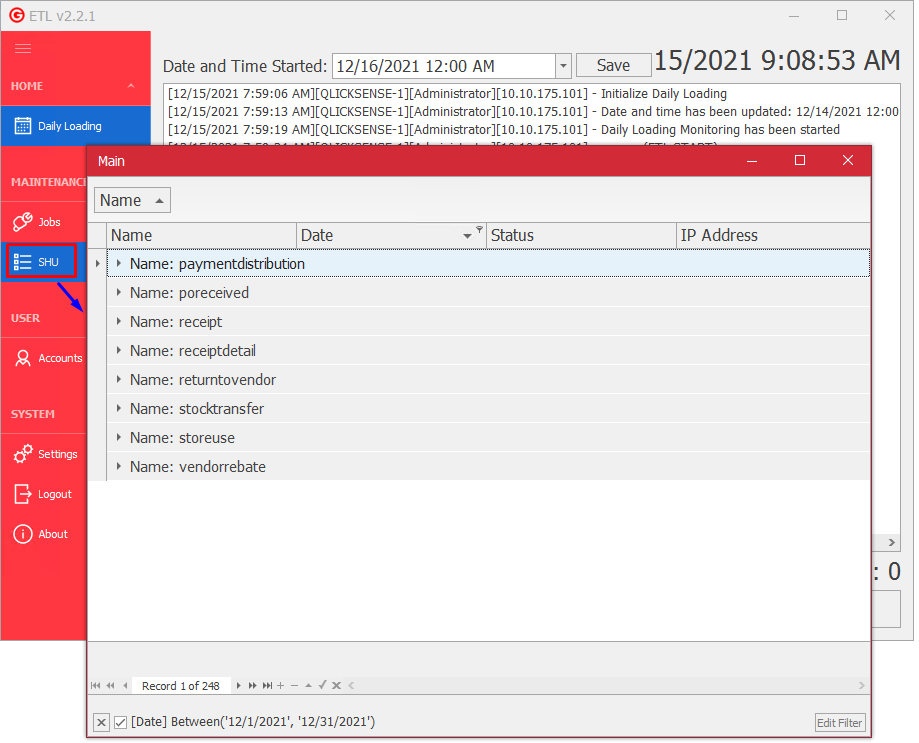
-
When finished, navigate to
Daily Loadingand update the ETL app date to the yesterday and clickSave.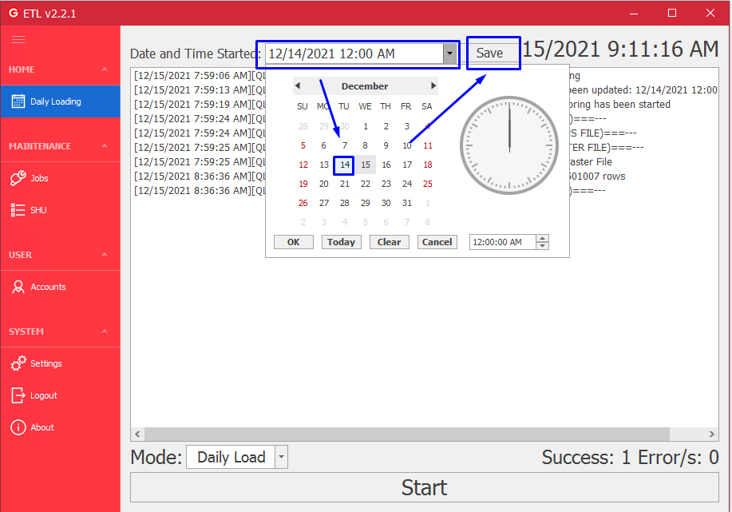
-
Open your web browser and check the QMC tasks
http://10.10.0.91/qmc/tasks. Make sure that tasks2.0Extract_Transactionstatus isSuccess, before clickStarton the ETL app.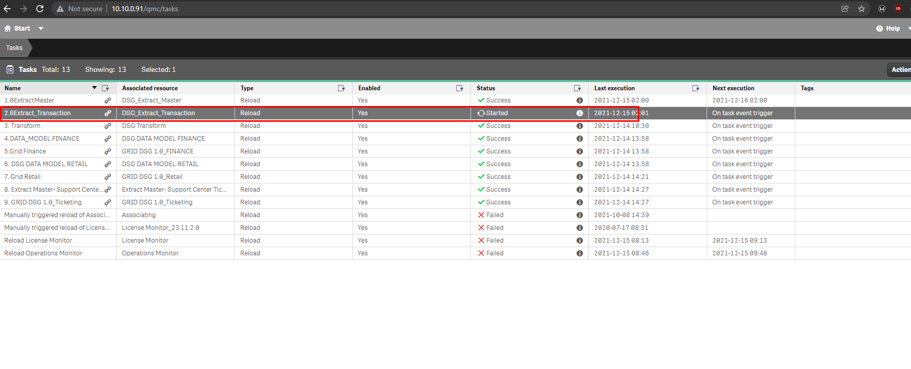
-
After processing the reruns, you will see
---===(ETL FINISH)===---. Just leave it and do not close the app even if it has finished processing in order for the processing at 12AM to take place accordingly.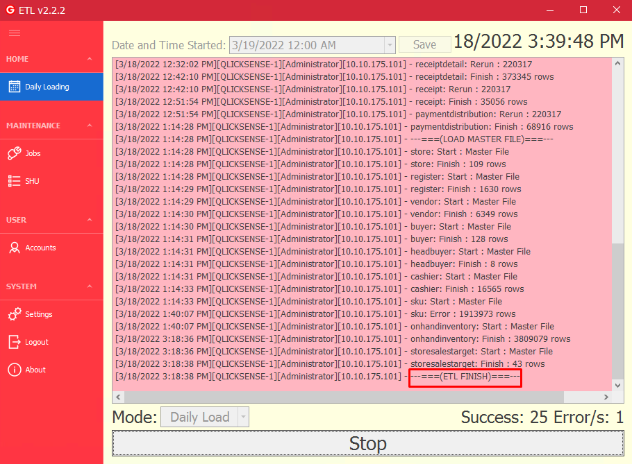
However, if the app was closed either intentionally or not, just open the ETL app and go to
Daily Loading, set the date to tomorrow's date, then save and clickSTARTas this will serve as the trigger for the 12AM processing. After that, you should be able to seeDaily Loading Monitoring has been started.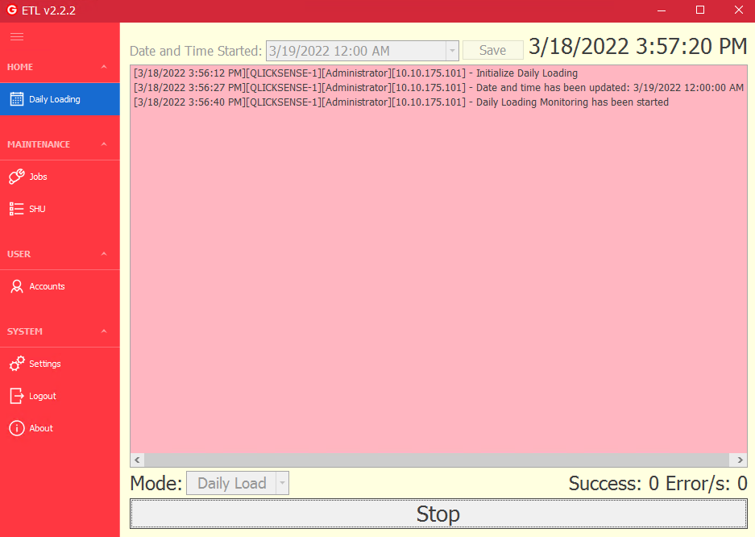
NOTE:
Any changes or data update during the actions during the Daily Checking will be reflected the next day after QMC tasks are completed.
Daily Customer Load
Customer loading in the ETL is separate as it will interfere with the other ETL jobs. This is to be done daily first thing in the morning.
-
Open ETL app then navigate to
Jobs. -
Uncheck everything in 'Active' column and leave the
customerjob checked.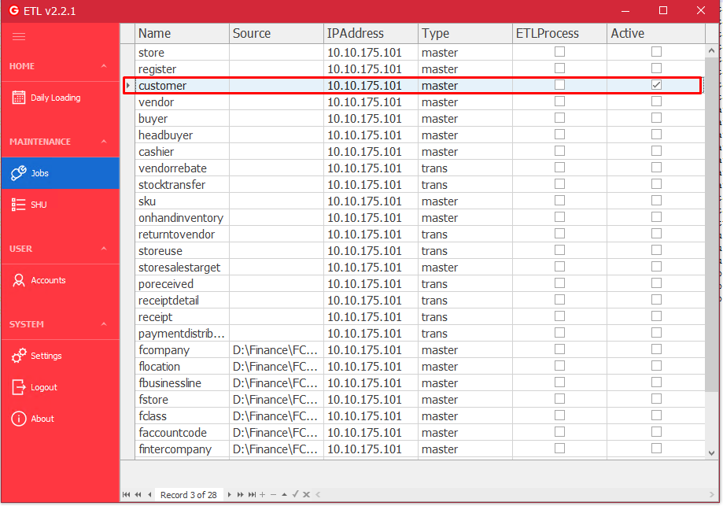
-
Navigate to
Daily Loadingand update the ETL app date to the yesterday and clickSave. -
Click
Startand wait for the---===(ETL FINISH)===---status. -
Navigate to
Jobsagain and reverse your action in step number 2 leaving onlycustomerunchecked
ETL Common Issues, Solutions, & Procedures
-
Cannot connect to DTWHS or RDP to
10.10.175.101.Make sure you're connected to the network. Ping
10.10.175.101and make sure that you receive a reply, otherwise contact ICT support. -
SHU is not showing all retail process even though jobs are active.
Exit and relaunch the ETL App
-
Error in ETL App logs
- Log errors can't always be predicted. However, you can safely ignore
Transport connectionerrors inPaymentDistributionbecause the database connection is local in the ETL App context. You may also ignoreDuplicate Primary Keyerrors in thesku. These are non-fatal errors and the ETL can still function with it. - Most common fatal error is when either or both MMS and WinDSS servers are offline. Make sure to map the WinDSS shared folder
\\10.10.0.45\ETL-updateas driveXand also make sure that shared folder have all these files:CUST.TPS,vCUSTCARD.TPS, andvCUSTTRANc.TPS, otherwise contact system admin.
- Log errors can't always be predicted. However, you can safely ignore
-
ETL did not finish
If you can't see any
---===(ETL FINISH)===---status on the ETL app. Check the logs because the ETL app may have encountered a fatal error. -
How to do DTWHS database backup
- RDP to
10.10.175.101and runXAMPP Control Panel. Clickshellthen paste this command:mysqldump -u root dsg_datawarehouse | gzip > E:\mysql\dumps\dsg_datawarehouse_YYMMDD.sql.gzreplacingYYMMDDwith the date today. 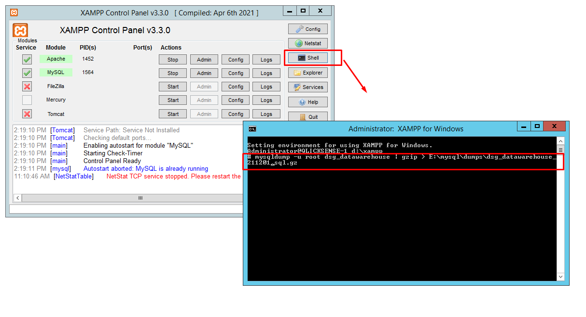 This will generate a compressed.sqlfile atE:\mysql\dumps. Please note that due to the size of the DTWHS, this will take a significant amount of time!
- RDP to
-
Restore DTWHS backup
- To restore the whole database, uncompress the
.sql.gzfile using WinRAR first. This will a take a long time, be patient! - After that run
XAMPP Control Panel. Clickshellthen paste this command:mysql -u root dsg_datawarehouse < D:\dumps\dsg_datawarehouse_YYMMDD.sqlreplacingYYMMDDwith the date of the backup. This will also take some time so be patient.
- To restore the whole database, uncompress the
-
ETL has Stopped Working
-
Process virus scanning and restart server.
(see error history) -
Receipt Details & Receipt Errors
-
Increase the buffer time in
Mysql(see error history) -
Unable to Set ETL
- Check if the data on
Receiptcorresponds with the data onReceiptDetail. - Rerun the dates wherein the data on
Receiptdoes not correspond with theReceiptDetailor vice versa
(see error history) - Check if the data on
-
ETL Client has stopped working
- Click
view problem detailsto see the specific reason that causes the problem.
(see error history) - Click
-
ETL SHU Slow Data Extraction
- Replaced the current driver from
OLEDB drivertoDBS UDB iSeries DriverDBS UDB iSeries Driver.Net Provider to improve performance - Removed the Group by function in the SQL query
(see error history) - Replaced the current driver from